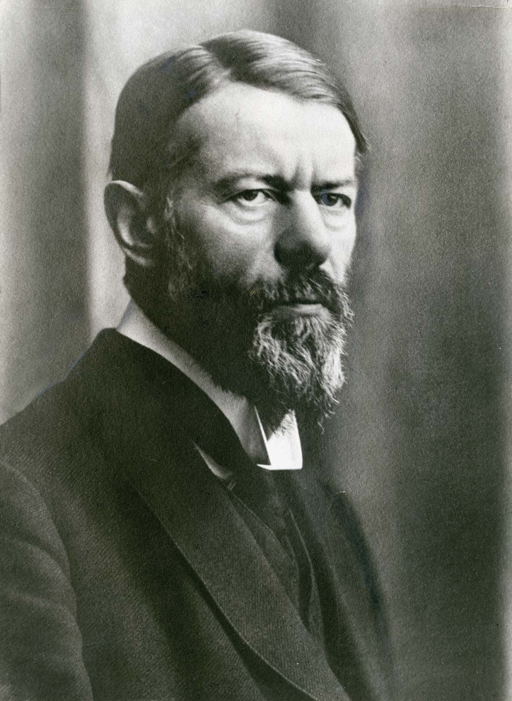
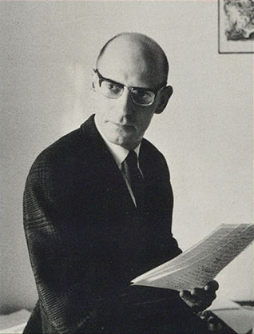
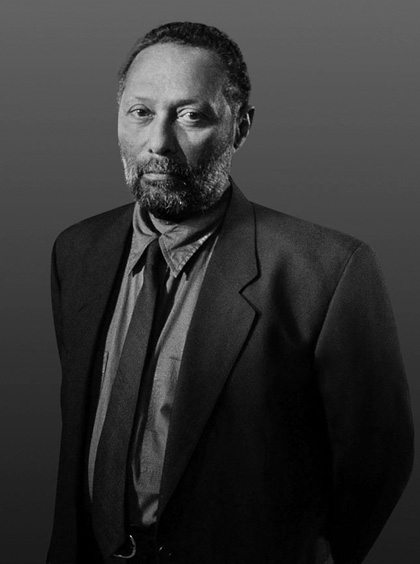
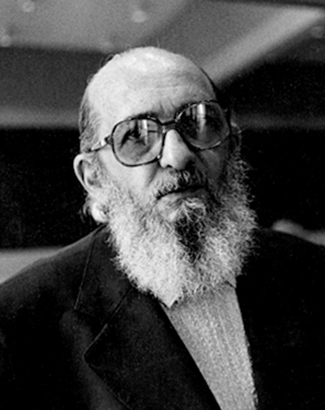
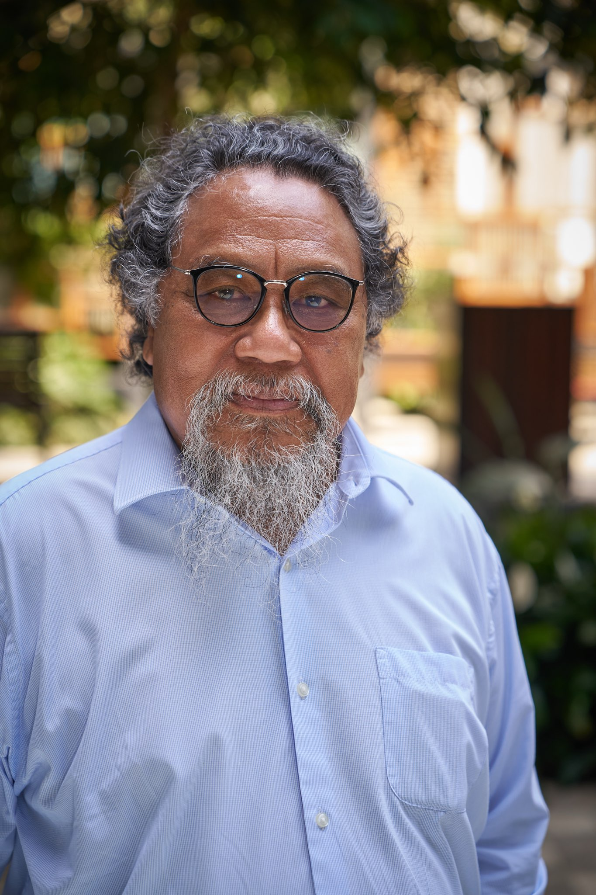

Cultural Capital (embodied, objectified, institutionalized), Habitus, Field, Symbolic Violence
Mass education is not a neutral meritocracy. Schools treat middle-class cultural capital (language codes, tastes, posture) as natural intelligence or diligence, while committing symbolic violence against working-class students by misrecognizing inherited class privilege as innate academic merit.
Anti-school counter-culture, "The Lads" vs. "The Ear'oles", Cultural Penetration, Self-Exclusion
Working-class "lads" construct an aggressive counter-culture that rejects scholastic authority and celebrates manual labor. Through cultural penetration, they see through the myth of meritocracy, but their active defiance paradoxically results in self-exclusion into the dead-end factory jobs they celebrated.
Hegemonic Masculinity, Gender Order, Gender Regimes
Gender is a relational power hierarchy rather than a fixed biological trait. Schools function as active gender regimes where hegemonic masculinity (physical dominance, emotional stoicism, athleticism, heteronormativity) sits at the apex, subordinating complicit, marginalized, and gay masculinities.

Max Weber & Randall Collins Status Group ClosureMultidimensional Stratification (Class, Status, Party), Social Closure, Credentialism & Credential Inflation
Weber showed that social power operates across status groups seeking social closure. Collins applied this to show that rising degree requirements are driven by dominant status groups using diplomas as gatekeeping currencies, causing credential inflation where degrees steadily depreciate in value.
Restricted vs. Elaborated Codes, Classification & Framing, Rule-Governed Non-Standard Dialects
Bernstein showed that schooling relies on elaborated codes (context-free, explicit syntax), placing working-class children accustomed to restricted codes (context-dependent) at a severe disadvantage. Labov demolished "deficit" theories by proving that non-standard dialects (like Black English Vernacular) are logical, rule-governed linguistic systems, not broken English.

Michel Foucault PoststructuralismSovereign vs. Disciplinary Power, Docile Bodies, The Panopticon, Regimes of Truth
Modern power shifted from public physical coercion (sovereign power) to diffuse surveillance (disciplinary power). Timetables, cellular seating, and the Panopticon compel individuals to internalize observation, training them to become self-policing, docile bodies.
Performativity, Audit Culture, Fabrications, Governance by Numbers, Remote Steering
Ball unmasks how neoliberal audit culture forces teachers into performativity—aligning work with measurable targets at the expense of authentic teaching. Lingard shows how standardized testing (NAPLAN) functions as "governance by numbers," allowing governments to steer schools remotely without physical intervention.

Stuart Hall Cultural StudiesEncoding/Decoding Model, Polysemy, Active Audience
Media texts do not brainwash passive viewers; audiences act as an active audience to decode polysemic media messages using dominant-hegemonic, negotiated, or oppositional frameworks based on their own socio-cultural backgrounds and class positions.

Paulo Freire Critical PedagogyThe Banking Model vs. Problem-Posing Education, Conscientisation, Praxis
Traditional education operates as a "banking model" where teachers deposit static facts into passive students. Freire proposes problem-posing education through dialogue, fostering critical consciousness (conscientisation) and action (praxis) to transform oppressive realities.
Relational Ethics of Care, The "One-Caring" and the "Cared-For"
Critiques detached, rule-bound justice frameworks by proposing an ethics of care centered on attentiveness, trust, and emotional responsiveness within the reciprocal relationships formed between educators and individual learners.

Martin Nakata Indigenous Standpoint TheoryThe Cultural Interface, Dual Epistemological Navigation
The Cultural Interface is the contested, dynamic space where First Nations oral traditions and Western disciplinary systems meet. First Nations students should be equipped to navigate this space critically, mastering Western academic tools without surrendering their cultural sovereignty.
"Powerful Knowledge" vs. "Knowledge of the Powerful", The "Codes of Power", Explicit Instruction
Young warns against treating all school knowledge as arbitrary ruling-class etiquette, distinguishing between knowledge of the powerful (bourgeois manners) and powerful knowledge (testable, domain-specific disciplinary knowledge). Delpit demonstrates that when progressive teachers refuse to explicitly teach standard grammar and academic registers, they abandon disadvantaged students who do not learn these "codes of power" at home.